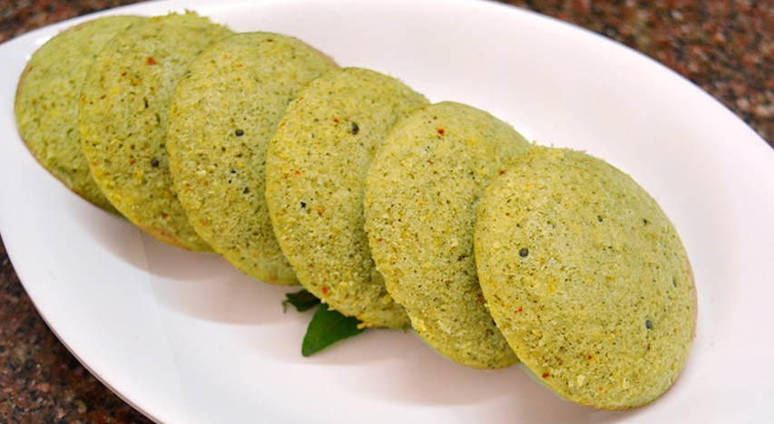

Curry Leaves Idli
Ingredients
- 1 cup idli rice
- 1/2 cup urad dal (split black gram)
- 1/4 cup chana dal (split chickpeas)
- 1/2 cup curry leaves, finely chopped
- 1 teaspoon mustard seeds
- 1/2 teaspoon cumin seeds
- 1/2 teaspoon turmeric powder
- 1 teaspoon grated ginger
- Salt to taste
- Water (as needed)

Cooking Process
- Soak the idli rice, urad dal, and chana dal in water for 6-8 hours or overnight.
- Drain and grind the soaked ingredients into a smooth batter, adding water as needed.
- Mix in the chopped curry leaves, turmeric powder, grated ginger, and salt. Allow the batter to ferment for 8-12 hours or until it has doubled in volume.
- Preheat the idli steamer or a large pot with a steaming rack.
- Pour the batter into idli molds, filling them about 3/4 full.
- Steam the idlis for 10-12 minutes or until a toothpick inserted into the center comes out clean.
- Remove the idlis from the molds and serve hot with coconut chutney and sambar.
Nutritional Information (Per Serving)
- Calories: 120 kcal
- Carbohydrates: 25g
- Protein: 4g
- Fat: 1g
- Fiber: 2g
- Iron: 5% of daily value
- Vitamin A: 10% of daily value
Cooking Tips and Tricks
- Ensure the batter is well-fermented for fluffy idlis.
- Use a mix of rice and dal in the right proportions to achieve the ideal idli texture.
- Add finely chopped vegetables to the batter for added flavor and nutrition.
- Grease the idli molds lightly to prevent sticking.
- Serve the idlis hot for the best taste and texture.